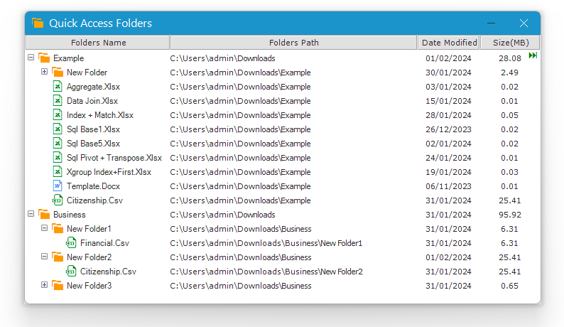

Sử dụng hộp thoại để thiết lập.
1. Mở nhanh file hoặc thư mục bằng cách double click vào label.
2. Đổi tên, xóa, di chuyển, copy file, thư mục bằng cách sử dụng chuột trái (phải) kéo thả.
3. Cung cấp Contextmenu với một số chế độ tùy chỉnh.
4. Đồng bộ hóa Files, Folders trên hộp thoại với cửa sổ Explorer.
Xem demo Video.
1. Nên chọn thư mục cụ thể (tránh chọn toàn bộ ổ đĩa C:\ hay D:\ sẽ mất nhiều thời gian hơn để tải).
Related function
NUMBERTOWORDS (feature) Thiết lập phụ từ cho ứng dụng đọc số thành chữ (Ribbon).
FLOOKUP Nhập liệu nâng cao, hỗ trợ tra cứu (lọc) và xuất nhanh dữ liệu dựa trên từ khóa.
XGROUP Hàm mở rộng của GROUP. (hỗ trợ các hàm nâng cao).
Return to Home